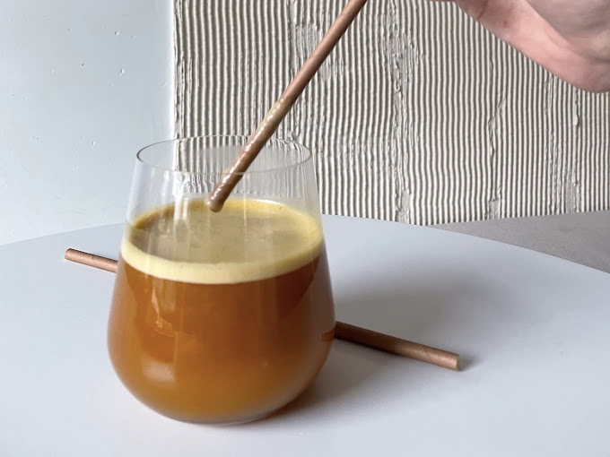
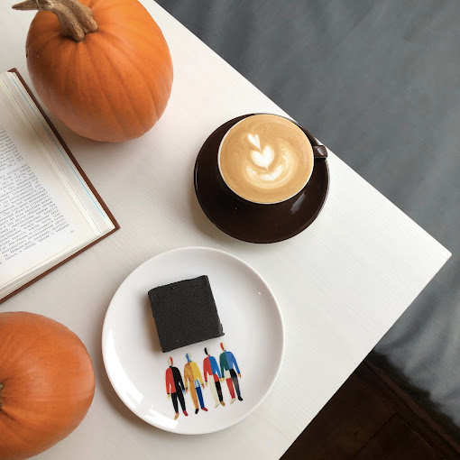
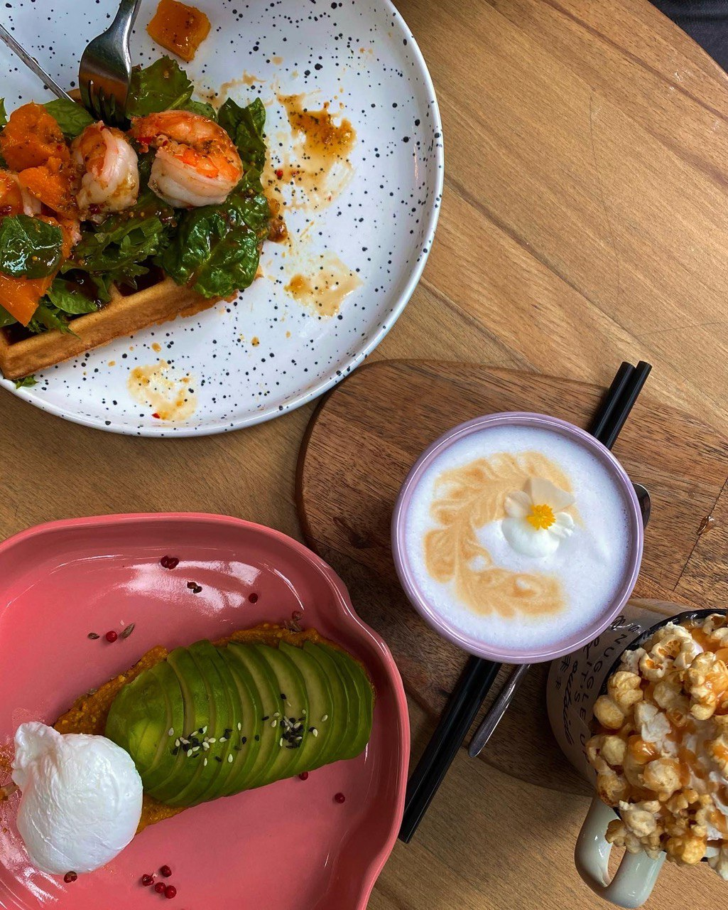
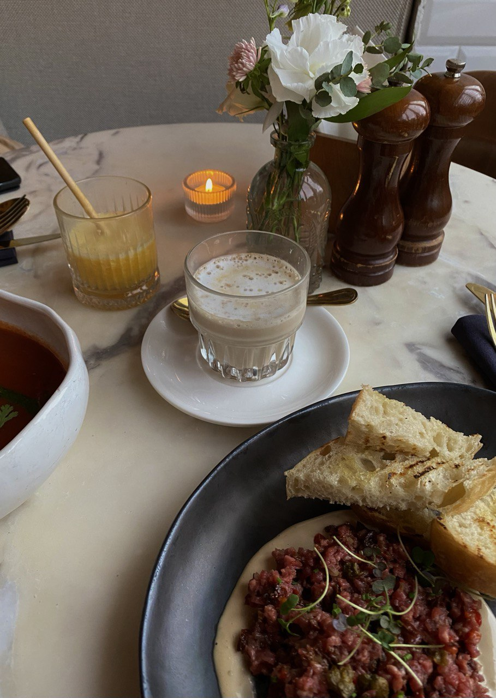

avcd.coffee

Небольшая светлая кофейня на углу Инструментальной улицы и Аптекарского переулка. В Avcd
Coffee напитки готовят на зерне высшего сорта, среди фирменных позиций: раф имбирь-лайм и арахисовый какао с
соленой карамелью. Подают интересный холодный бамбл на основе матчи с грейпфрутом и ананасом, заваривают
напиток на основе цикория — «Цикоричино». Каждое утро выпекают круассаны: цельнозерновые, шоколадные и с
сыром бри. Сюда можно зайти на завтрак в течение всего дня, выбрать предлагают между скрэмблом, боулом или
гранолой.
Вкус искусства
Небольшая арт-кофейня в центре Петербурга. Во «Вкусе искусства» готовят классический и
альтернативный кофе на specialty зерне: используют воронку и аэропресс, готовят авторский какао на сливках с
тремя видами бельгийского шоколада. В десертах — необычные пирожные с ежевично-лавандовым или
шоколадно-мятным вкусами. Целый день подают завтраки. Из интересного в кондитерской «Вкус искусства» —
библиотека, где собрали книги по искусству, театру и кино, а также биографии художников.

Chocolate bar

Кафе-кондитерская в зимнем саду на Каменноостровском проспекте. «Шоколадный бар» занял
индустриальное помещение оранжереи при ДК им. Ленсовета. Перед запуском проекта, создатели облагородили
внешний вид пространства: восстановили разбитые дорожки и мраморный фонтан, добавили больше живых растений,
повесили хрустальную люстру и гирлянды. Акцент в меню «Шоколадного бара» сделан на сладости: шоколадное
фондю, конфеты и трюфели ручной работы, классические пирожные и торты, бельгийские вафли с топпингами и
огромный выбор мороженого. Помимо десертов, в кафе подают завтраки в течение всего дня, а для более сытного
перекуса предусмотрены салаты. Из интересного в разделе напитков — горячий шоколад с топпингами.
Счастье на исаакиевской
Бар-ресторан в историческом центре Петербурга с пятиметровыми потолками, панорамным видом на
Исаакиевский собор и соответствующим антуражем. Место, где время мегаполиса останавливается, чтобы созерцать
жизнь и наслаждаться игрой пузырей в бокале шампанского, сидя на террасных стульях из старейшего парижского
ателье Maison Gatti….Бар-ресторан с авторской кондитерской. Зал почти белоснежный: стены, люстры, камины,
ангелочки – всё очень нарядное. В меню более ста видов сладостей от французского бренд-кондитера Лорана
Морено; кроме десертов, есть завтраки и небольшое основное меню с легкими европейскими блюдами. Можно купить
навынос фирменные конфеты и печенье в красивой упаковке.
